Opéra de Rouen Normandie Opéra de Rouen Normandie 루앙 노르망디 오페라
Schubert, Mozart — Concertmaster Schubert, Mozart — Concertmaster 슈베르트, 모차르트 — Concertmaster
Rouen 🇫🇷
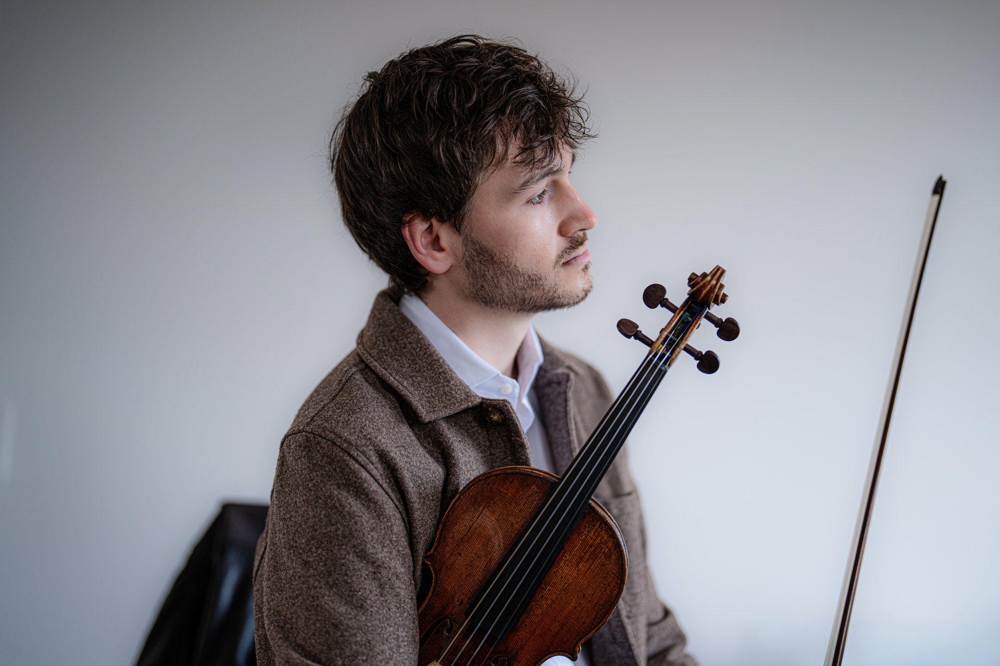
Soloist, chamber musician, and orchestral artist performing on international stages. Soliste, chambriste et musicien d'orchestre se produisant sur les plus grandes scènes internationales. 세계 최고의 무대에서 활동하는 솔리스트, 실내악 연주자, 오케스트라 아티스트.
His repertoire ranges from Baroque to contemporary music. Son répertoire s'étend de la musique baroque à la musique contemporaine. 그의 레퍼토리는 바로크 음악에서 현대 음악까지 아우른다.
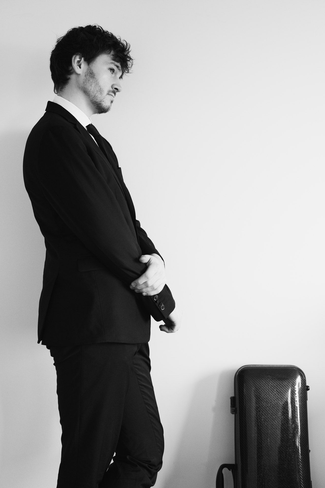
Biography Biographie 바이오그래피
Vassily Chmykov is a French violinist who stands out on both French and international stages as a chamber musician, soloist, and orchestral artist.
Vassily Chmykov began his musical studies in Monaco under Margarita Guerchovitch. He went on to study at the Conservatoire National Supérieur de Musique et de Danse de Paris (CNSMDP) under Alexis Galperine, then pursued his studies in Switzerland at the HEMU de Lausanne for a Master Soloist degree under Svetlana Makarova and Pavel Vernikov.
Vassily Chmykov est un violoniste Français qui se distingue sur les scènes de l'hexagone et internationales en musique de chambre, soliste, et en orchestre.
Vassily Chmykov débute son apprentissage musical à Monaco dans la classe de Margarita Guerchovitch. Il intègre par la suite le Conservatoire National Supérieur de Musique et de Danse de Paris (CNSMDP) dans la classe d'Alexis Galperine, puis poursuit ses études en Suisse à l'HEMU de Lausanne en Master Soliste dans la classe de Svetlana Makarova et Pavel Vernikov.
바실리 슈미코프(Vassily Chmykov)는 실내악, 솔리스트, 그리고 오케스트라 연주자로서 프랑스 및 국제 무대에서 두각을 나타내는 프랑스 바이올리니스트입니다.
바실리 슈미코프는 모나코에서 마르가리타 게르초비치를 사사하며 음악 수학을 시작했습니다. 이후 파리 국립고등음악원(CNSMDP)에서 알렉시 갈페린을 사사한 뒤, 스위스 로잔 HEMU에서 스베틀라나 마카로바와 파벨 베르니코프를 사사하며 솔리스트 석사 과정을 이수했습니다.
Download the biographyTélécharger la biographie바이오그래피 다운로드
Photographies Photographies Photographies
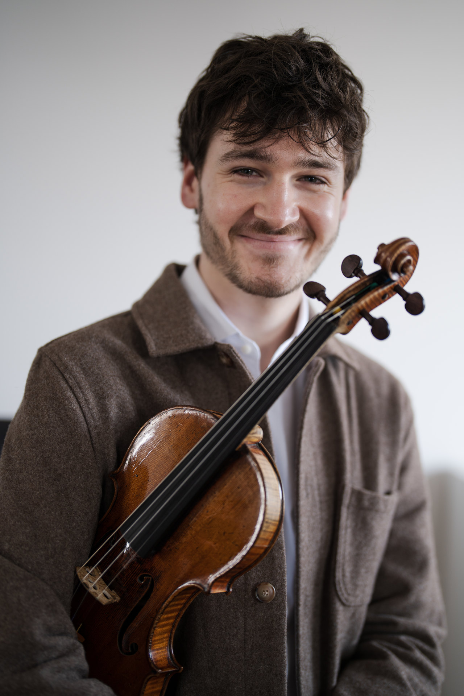
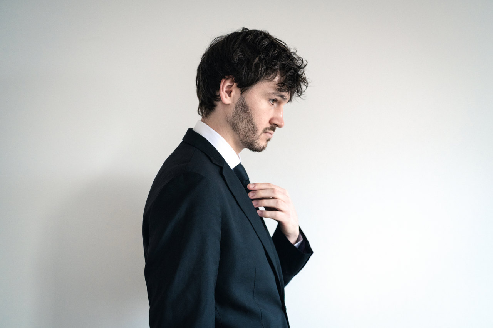
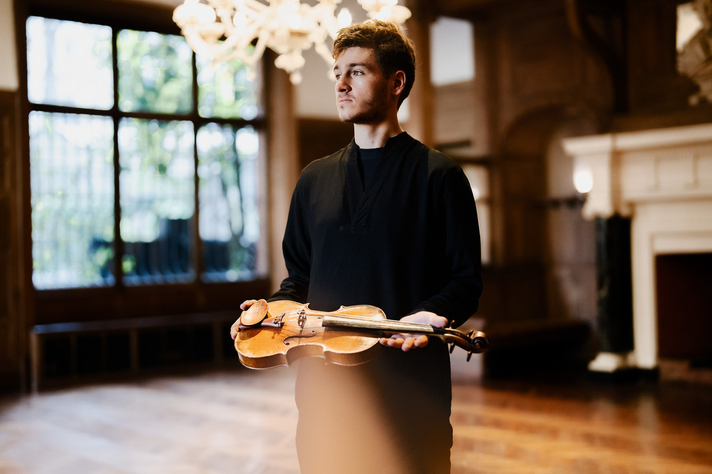
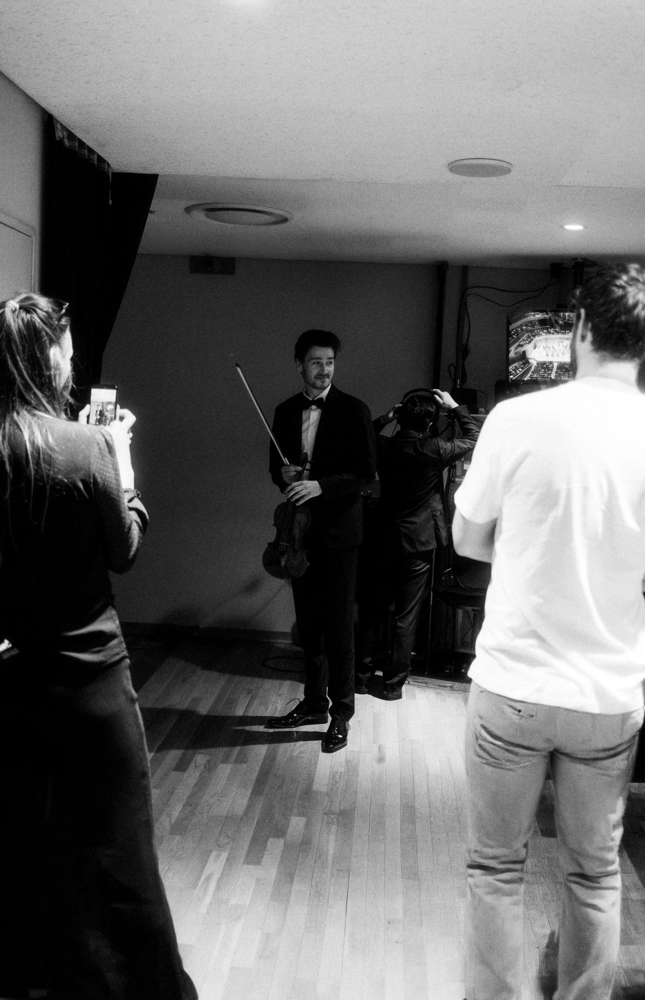
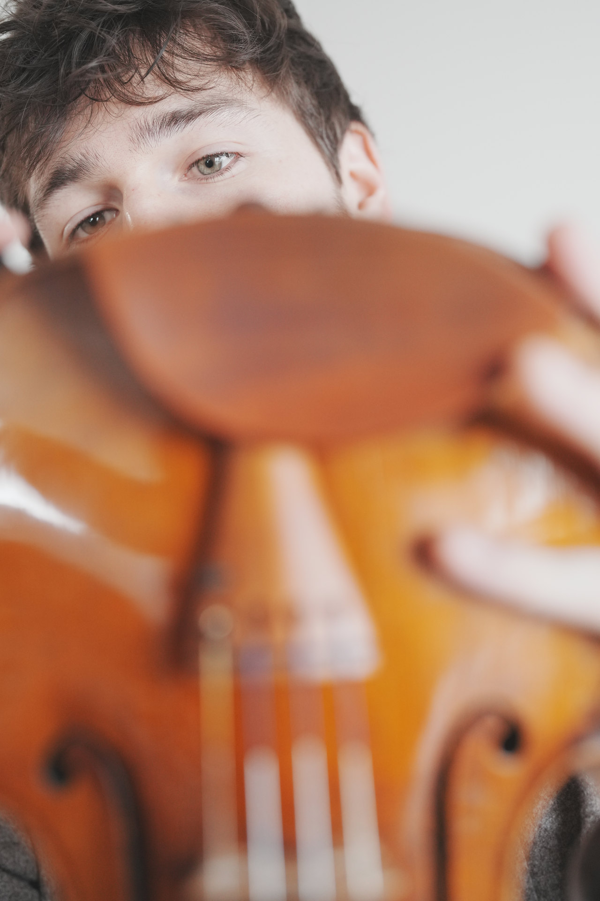
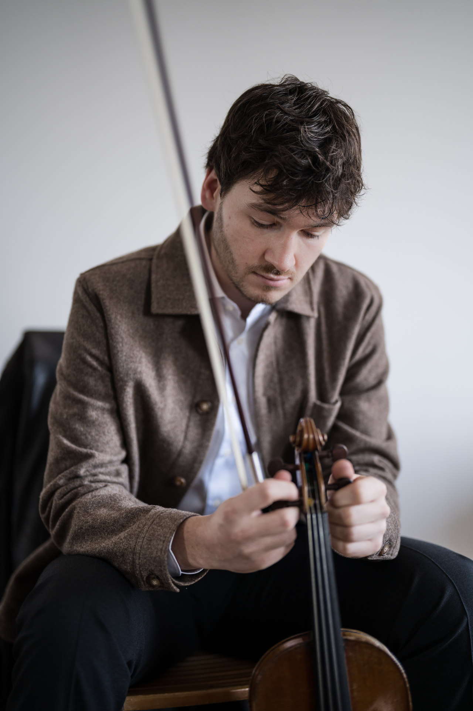
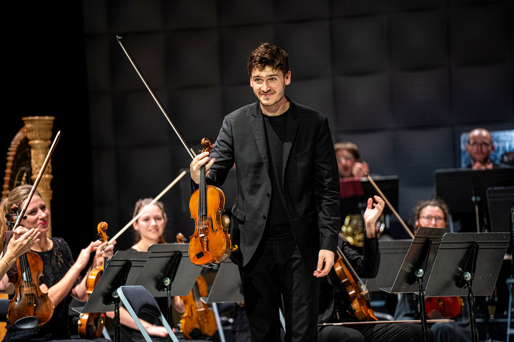
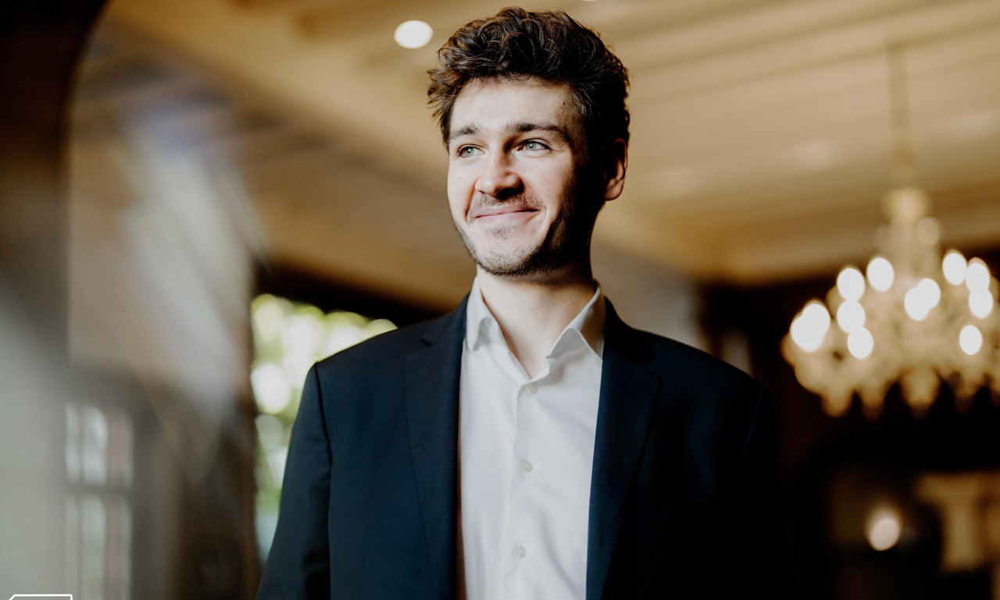
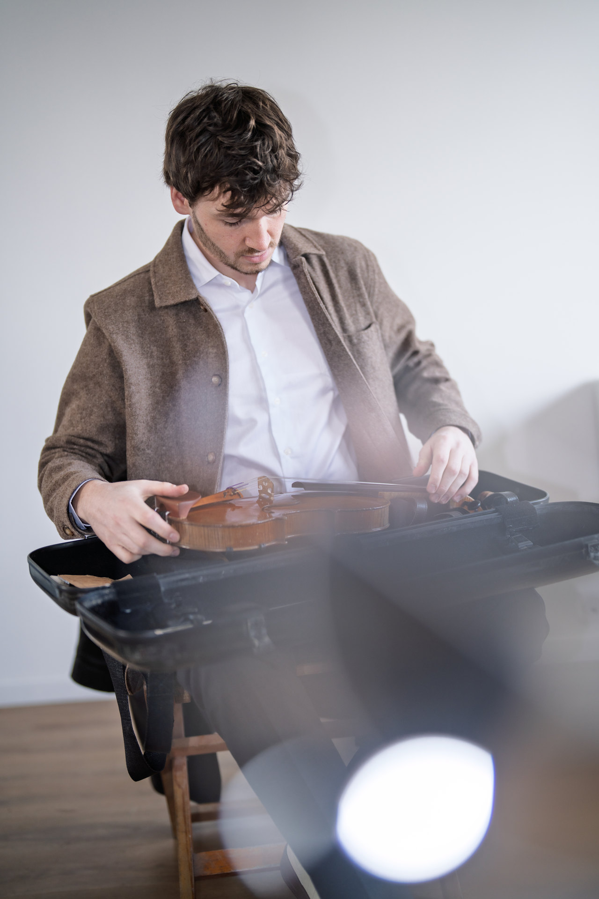
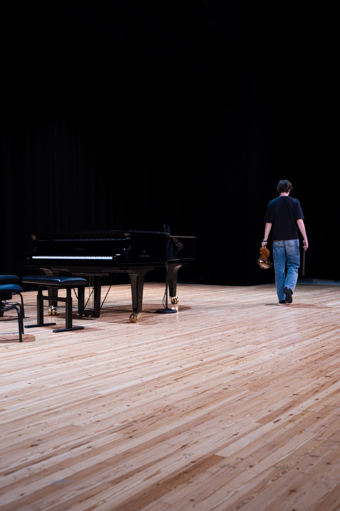
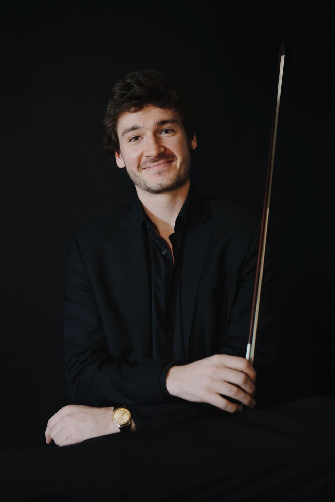
Agenda
Schubert, Mozart — Concertmaster Schubert, Mozart — Concertmaster 슈베르트, 모차르트 — Concertmaster
Vivaldi — Chamber music Vivaldi — Musique de chambre 비발디 — 실내악
Tchaikovsky, Souvenir de Florence — Schnittke, Piano Quintet Tchaïkovski, Souvenir de Florence — Schnittke, Quintette avec piano 차이코프스키, 피렌체의 추억 — 슈니트케, 피아노 5중주
Mozart — Seoul Arts Center Mozart — Seoul Art Center 모차르트 — 서울 예술의전당
Liszt, Rachmaninov, Schubert — Concertmaster Liszt, Rachmaninov, Schubert — Concertmaster 리스트, 라흐마니노프, 슈베르트 — Concertmaster
— with Stéphanie Huang, Emmanuel Coppey, Paul Zientara — avec Stéphanie Huang, Emmanuel Coppey, Paul Zientara — 스테파니 황, 에마뉘엘 코페, 폴 지엔타라
Festival de l'Epau — Mozart, Schumann, Éric Tanguy — Concertmaster Festival de l'Epau — Mozart, Schumann, Éric Tanguy — Concertmaster 에포 페스티벌 — 모차르트, 슈만, 에릭 탕기 — Concertmaster
Orchestre Consuelo — Concertmaster Orchestre Consuelo — Concertmaster 콘수엘로 오케스트라 — Concertmaster
N. Campogrande, Concerto for Audience and Orchestra — Concertmaster N. Campogrande, Concerto pour public et orchestre — Concertmaster N. 캄포그란데, 청중과 오케스트라를 위한 협주곡 — Concertmaster
Brahms, Grieg, Mozart — Concertmaster Brahms, Grieg, Mozart — Concertmaster 브람스, 그리그, 모차르트 — Concertmaster
Brahms, Beethoven — Concertmaster Brahms, Beethoven — Concertmaster 브람스, 베토벤 — Concertmaster
Grieg, Brahms — Orchestre Consuelo — Concertmaster Grieg, Brahms — Orchestre Consuelo — Concertmaster 그리그, 브람스 — 콘수엘로 오케스트라 — Concertmaster
Beethoven — with Jae-Yeon Won Beethoven — avec Jae-Yeon Won 베토벤 — 원재연과 함께
Mendelssohn, Octet — Shostakovich, Five Pieces Mendelssohn, Octuor — Chostakovitch, 5 Pièces 멘델스존, 8중주 — 쇼스타코비치, 5개의 소품
Händel-Halvorsen — with Paul Zientara Händel-Halvorsen — avec Paul Zientara 헨델-할보르센 — 폴 지엔타라와 함께
Schumann, Debussy, Brahms, Beethoven — with Arthur Hinnewinkel Schumann, Debussy, Brahms, Beethoven — avec Arthur Hinnewinkel 슈만, 드뷔시, 브람스, 베토벤 — 아르튀르 이네빈켈과 함께
With orchestra Avec orchestre 오케스트라 협연
Concertmaster Concertmaster Concertmaster
Concertmaster Concertmaster Concertmaster
Escaich, Ravel, Gershwin — Chamber music Escaich, Ravel, Gershwin — Musique de chambre 에스카이슈, 라벨, 거슈윈 — 실내악
Concertmaster Concertmaster Concertmaster
Concertmaster Concertmaster Concertmaster
Debussy, G. Lorusso — with Charles Heisser Debussy, G. Lorusso — avec Charles Heisser 드뷔시, G. 로루소 — 샤를 에세르와 함께
Concertmaster Concertmaster Concertmaster
Concertmaster Concertmaster Concertmaster
Fauré, Schumann — with Hortense Cartier-Bresson, François Salques Fauré, Schumann — avec Hortense Cartier-Bresson, François Salques 포레, 슈만 — Hortense Cartier-Bresson, François Salques와 함께
Concertmaster Concertmaster Concertmaster
Concertmaster Concertmaster Concertmaster
Concertmaster Concertmaster Concertmaster
Mozart, Beethoven, Dvořák — Chamber music — with Félicité Laîné, Iris Scialom, Héloïse Houzé, Jérémy Garbarg Mozart, Beethoven, Dvořák — Musique de chambre — avec Félicité Laîné, Iris Scialom, Héloïse Houzé, Jérémy Garbarg 모차르트, 베토벤, 드보르자크 — 실내악 — Félicité Laîné, Iris Scialom, Héloïse Houzé, Jérémy Garbarg와 함께
Contact
Booking & Contact Réservation & Contact 예약 & 연락